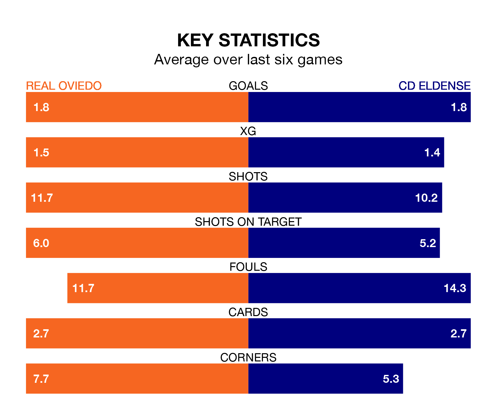

Real Oviedo face CD Eldense on Sunday seeking to protect their long unbeaten run in the Segunda División.
Oviedo are unbeaten in seven, with four wins and three draws, ahead of the 3.15pm kick-off.
They face an Eldense team who have won two and drawn four over the same number of games.
With 33 goals in 24 games so far this season, Eldense are scoring more than average in the league with 1.4 goals per game. But they are conceding more than average too, letting in 35 goals at a rate of 1.5 per game.
Oviedo, meanwhile, are average scorers, with 1.2 goals per game. They have conceded 0.8 goals per game.
With Leo Román between the sticks, the home side can rely on one of the league's safest pair of hands. He has kept nine clean sheets in his 24 appearances this season, and only two other 'keepers – Sporting Gijón's Orlando Rubén Yáñez Alabart and CD Tenerife's Juan Soriano Oropesa – have been able to prevent the opposition scoring on more occasions in the Segunda División.
In the visitors' net, Andoni Zubiaurre has three clean sheets in 10 games. He has conceded a goal every 90 minutes, 40% more often than the 127 minutes between goals for Román Riquelme.
Oviedo are seventh in the table after 24 games, of which they have won nine and drawn 10, earning 37 points.
Eldense are six places behind Oviedo in 13th, with eight wins and nine draws putting them on 33 points.
Oviedo's last match was on January 27, a 1-0 win against Leganés, with Paulino de la Fuente Gómez getting the goal for Oviedo.
Eldense beat RCD Espanyol 3-2 last time out, on January 28, with Iván Chapela López (two) and Sergio Ortuño Díaz on the scoresheet.
Sunday's match will be refereed by José Luis Guzmán Mansilla, who has taken charge of 11 Segunda División games so far this season, issuing one red card and booking 56 players. He has awarded five penalties.
The last Oviedo game Guzmán Mansilla refereed was a 0-0 away draw with SD Amorebieta on October 21. His last Eldense match was their 1-1 draw away at Leganés on December 10.
Updated: 14:12 (UTC), 02/02/24